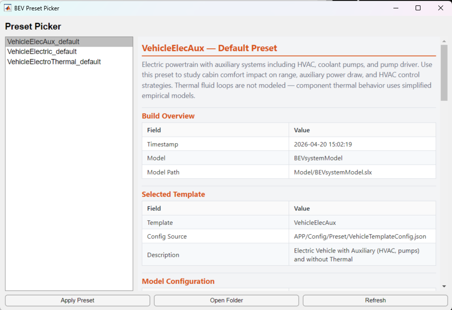

BEV Preset Picker
Browse, preview, and apply ready-to-use vehicle configurations
Overview
The Preset Picker is a lightweight UI that lists all available preset configurations, displays a README summary for each, and applies the selected preset to the system model with one click.

Each preset is a self-contained folder containing scripts that configure subsystem references and load parameters. Presets are the fastest way to get a model ready to simulate without opening the full BEV Setup App.
Open the Preset Picker
Run the entry-point script from the MATLAB command window or double-click it in the project.
OpenPresetPickerThe picker scans Script_Data/Setup/Preset/ for
preset folders and lists them in the left panel.
Shipped Presets
Three presets are shipped with the project.
| Preset | Template | Description |
|---|---|---|
VehicleElectric_default |
VehicleElectric | Basic powertrain — battery, dual motors, charger, driveline. No thermal. |
VehicleElecAux_default |
VehicleElecAux | Adds HVAC, coolant pumps, and pump driver to the base powertrain. |
VehicleElectroThermal_default |
VehicleElectroThermal | Full thermal plant — radiator, chiller, heater, coolant loops. |
Apply a Preset
- Select a preset from the list on the left.
- Review the README summary on the right — it shows the template, component selections, parameter files, and environment settings.
- Click Apply Preset. The picker runs
setupModelReferences.mto configure the model, waits for subsystems to load, then runssetupModelParameters.mto load parameters. - The system model opens automatically when the preset is applied.
You can also apply a preset from the command line without opening the picker.
run('Script_Data/Setup/Preset/VehicleElectric_default/applyPreset.m')Create Your Own Preset
1. Configure in the BEV App
Open the BEV Setup App, select your template, pick component fidelities, set environment conditions, and choose a drive cycle.
2. Export with Model Setup
Click Model Setup in the app. This generates a
timestamped folder under Script_Data/Setup/User/
containing:
setupModelReferences.m— configures subsystem referencessetupModelParameters.m— loads all parameter filesREADME.md— build snapshot with selections and settings
3. Promote to a Preset
Copy the exported folder into Script_Data/Setup/Preset/
and rename it to describe the configuration
(e.g., VehicleElectric_thermal_study).
Add an applyPreset.m script to the folder. The
boilerplate is the same for every preset.
%% Apply Preset: YourPresetName
% Short description of this preset.
%
% Copyright 2026 The MathWorks, Inc.
thisDir = fileparts(mfilename('fullpath'));
fprintf('Applying preset: YourPresetName\n');
% Configure model subsystem references
run(fullfile(thisDir, 'setupModelReferences.m'));
% Wait for model and referenced subsystems to fully load
pause(5);
% Load preset parameters
run(fullfile(thisDir, 'setupModelParameters.m'));
fprintf('Preset applied: YourPresetName\n');4. Verify
Open the Preset Picker, confirm your new preset appears in the list, review its README, and click Apply Preset to test it.
Folder Structure
Script_Data/Setup/
Preset/ ← shipped presets (tracked in git)
VehicleElectric_default/
applyPreset.m
setupModelReferences.m
setupModelParameters.m
README.md
VehicleElecAux_default/
...
VehicleElectroThermal_default/
...
User/ ← app-exported configs (gitignored)
BEVsystemModel_2026-04-20_15h09/
setupModelReferences.m
setupModelParameters.m
README.mdUser/ folder is gitignored.
To share a configuration, promote it to Preset/ and
commit it to the repository.